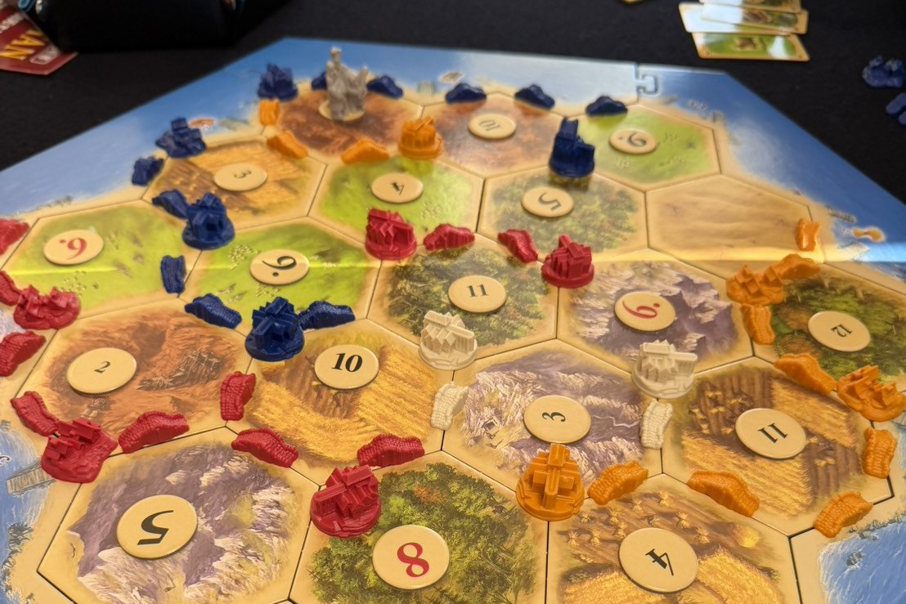
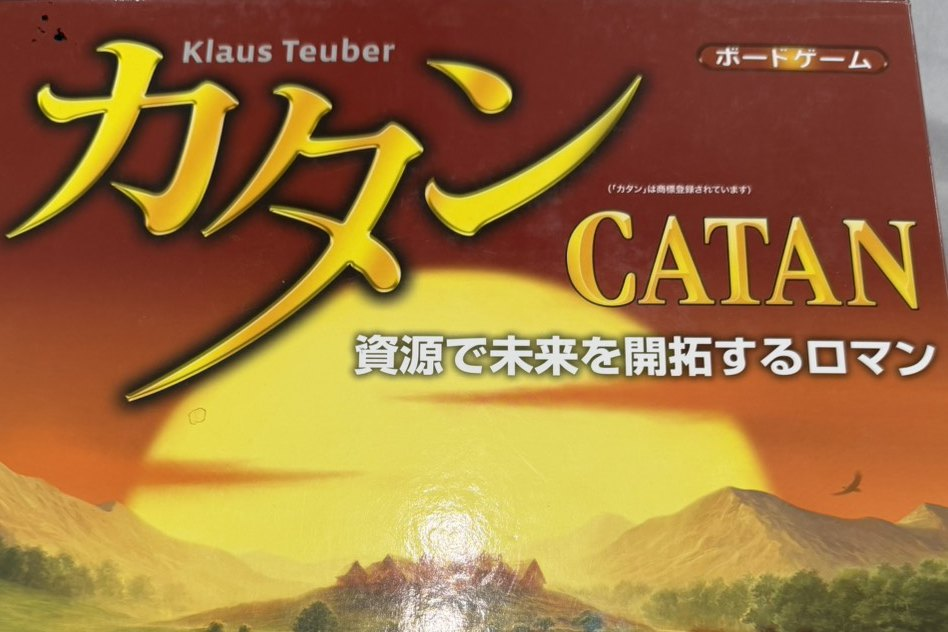
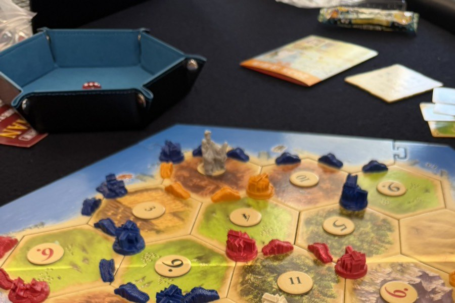

カタンの開拓者たち
無人島カタンを、みんなで同時に開拓していきます。 サイコロで資源が出て、足りないものは他のプレイヤーと交渉して手に入れる。 先に10点を取った人の勝ちです。

どんなゲームか
盤の上に、森・丘陵・牧草地・畑・山地が並んでいます。 そこに自分の開拓地を建てておくと、サイコロの出目に応じて 木材・レンガ・羊毛・小麦・鉱石が手に入ります。
集めた資源で道を伸ばし、開拓地を増やし、都市に育てる。 そのたびに点が入り、合計10点に届いた人が勝ちます。
ただし、必要な資源が自分の土地から出るとはかぎりません。 そこで他のプレイヤーと交渉します。 「小麦1枚、鉱石2枚と替えてくれませんか」——このやり取りがカタンの中心です。 うまく言いくるめた人が勝つのではなく、相手にも得をさせながら自分が半歩だけ前に出る人が勝ちます。
1995年のドイツ年間ゲーム大賞を受賞した作品で、 現代のボードゲームの入口として最初に名前が挙がる1本です。 デザイナーはクラウス・トイバー。
Players
3〜4人
基本セットの人数です
Play time
60〜90分
はじめての回は説明を含めて90分ほど
Category
戦略級・交渉あり
腰を据えて組み立てる系統
Award
ドイツ年間ゲーム大賞
1995年受賞
Rules
説明から入れます
予習は必要ありません
手番でやること
自分の番が来たら、この順番で進みます。慣れれば1手番は1分ほどです。
-
サイコロを振る
2個振って、合計の数字が書かれた土地から資源が出ます。 出るのは振った本人だけではありません。その土地に接している全員が資源をもらえます。 自分の番でなくても盤を見ておく理由がここにあります。
-
交渉する
足りない資源は、他のプレイヤーと交換して手に入れます。 レートは自由。断られても構いません。 交渉相手を探す会話そのものが、このゲームのいちばん面白いところです。 相手がいなければ、銀行と決まったレートで両替もできます。
-
建てる
道を伸ばして陣地を広げ、開拓地を建て、開拓地を都市に育てます。 発展カードを買うこともできます。 資源が余ったら、次の手番まで持ち越すより使ってしまうほうが基本的に有利です。
-
10点に届いたら勝ち
自分の手番中に合計10点に達した時点で、そのゲームは終わりです。 誰かが8点、9点と見えてきたあたりから、盤上の空気が変わります。
何を建てると何点か
| 対象 | 勝利点 |
|---|---|
| 開拓地 1軒につき | 1点 |
| 都市 開拓地を建て替えたもの | 2点 |
| 最長交易路 つながった道が5本以上で、いちばん長い人 | 2点 |
| 最大騎士力 騎士カードを3枚以上使い、いちばん多い人 | 2点 |
| ポイントカード 発展カードの中に入っています | 1点 |
最長交易路と最大騎士力は、条件を上回る人が現れるとそのまま奪われます。持っている2点が終盤に消えることがあります。
建てるのに要る資源
| 建てるもの | コスト |
|---|---|
| 道 | 木材1・レンガ1 |
| 開拓地 | 木材1・レンガ1・小麦1・羊毛1 |
| 都市 自分の開拓地を建て替えます | 小麦2・鉱石3 |
| 発展カード | 小麦1・羊毛1・鉱石1 |
序盤に要るのは木材とレンガ、中盤以降に効いてくるのは小麦と鉱石。最初にどの土地を押さえるかで、この後の展開が決まります。
はじめての方へ、5つだけ
覚えてこなくて構いません。卓についてから思い出せば十分です。
- 最初の2か所がいちばん重要です。出やすい数字（6と8）に触れる場所と、5種類の資源をなるべく散らして押さえる場所。迷ったら聞いてください、一緒に考えます
- 7が出たら要注意。資源は誰にも出ず、手札が8枚以上ある人は半分を捨てることになります。ためこまず、こまめに使うのが安全です
- 盗賊を置く場所には性格が出ます。トップの人の一等地を止めるのが定石ですが、恨みも買います。そこも含めて楽しむゲームです
- 交渉は断られて当たり前。断られても、相手が何を欲しがっているかという情報は残ります。損はしません
- 勝っている人と取引しない。全員がこれを意識しはじめると、終盤が一気に締まります
当店のカタン
店で撮った写真です。だいたいこんな空気で進みます。


WOLF で遊ぶなら
カタンは1本60〜90分。深夜に始めても、当店は朝8時半まで営業しています。 終電も終バスも関係のない時間帯なので、途中で時計を気にせず1本を通して遊べます。
3〜4人のゲームなので、3人以上で来られた日にちょうど収まります。 おひとりや2人で来られた場合も、その場に居合わせた方と卓を組めることがあります。 はじめての方へに当日の流れをまとめています。
ルール説明はこちらでします。読み込んでくる必要はありません。 「カタンやりたいです」とだけ言っていただければ十分です。
よくある質問
ルールを知らなくても遊べますか。
遊べます。遊び方の説明から入りますので、予習は必要ありません。全員がはじめてでも成立します。
2人でも遊べますか。
基本セットは3〜4人用です。2人でお越しの場合は、他のお客様と同卓を組むか、2人用に向いた別のゲームをご案内します。
どれくらい時間がかかりますか。
60〜90分ほどです。はじめての回は説明を含めて90分ほど見ておくと安心です。朝8時半まで営業しているので、深夜からでも1本を通して遊べます。
予約は必要ですか。
予約なしでもご来店いただけます。人数が決まっている場合はInstagram（@bodoge.wolf）のDMからご連絡いただけると確実です。
料金はいくらですか。
エントランス1,000円＋1時間ごとのチャージ1,000円（飲み放題付き）です。学生の方は別料金があります。くわしくは料金ページをご覧ください。
「カタンやりたいです」と言っていただければ、あとはこちらで整えます。